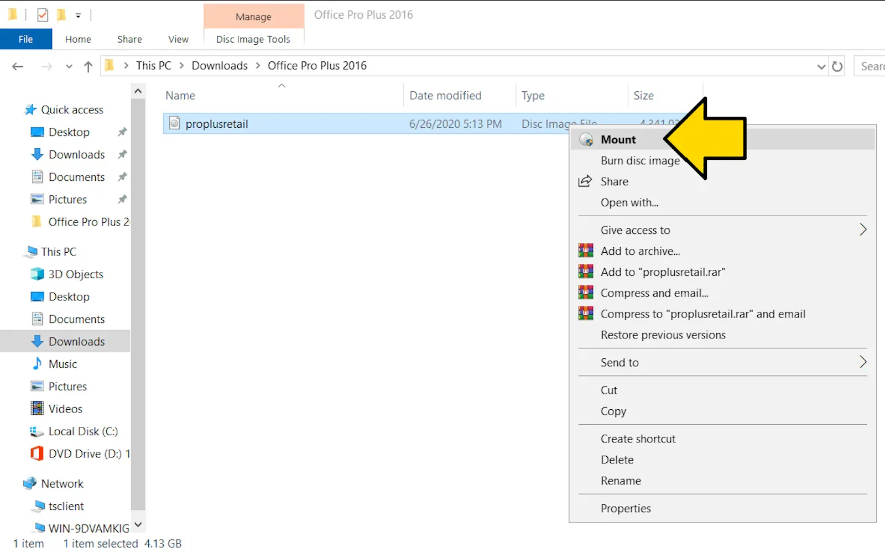
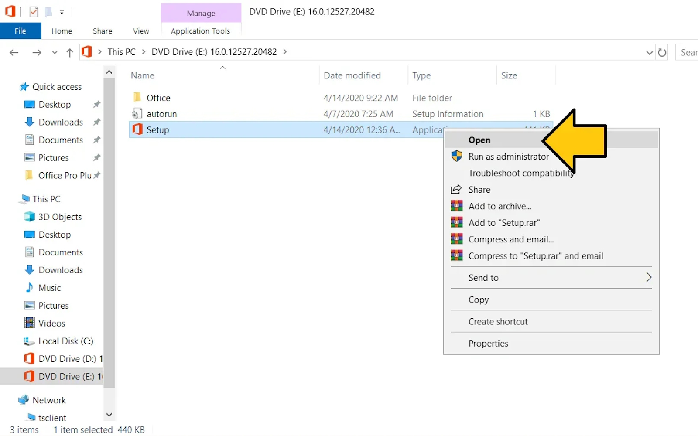
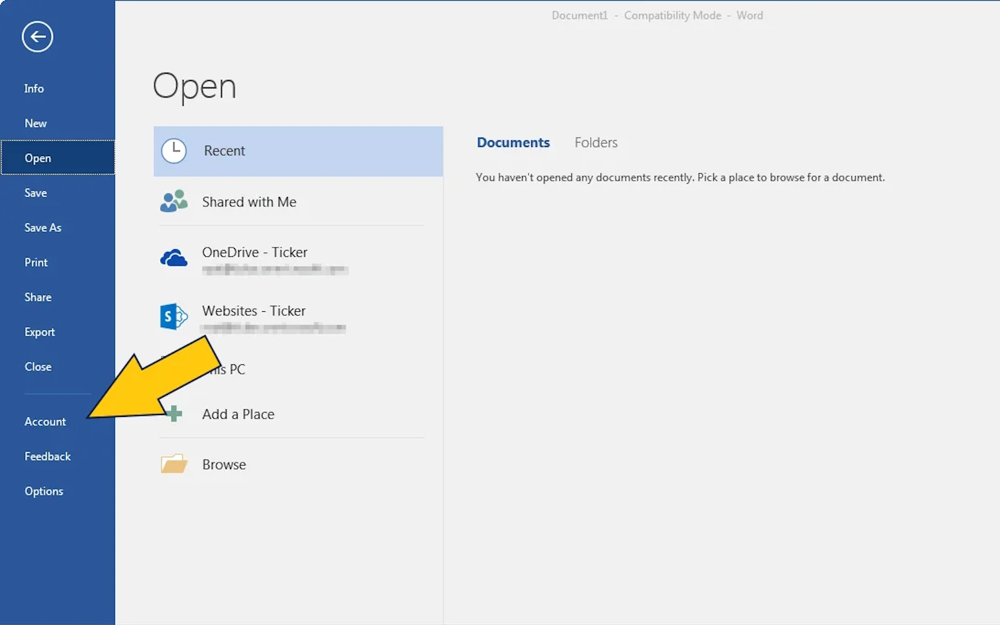
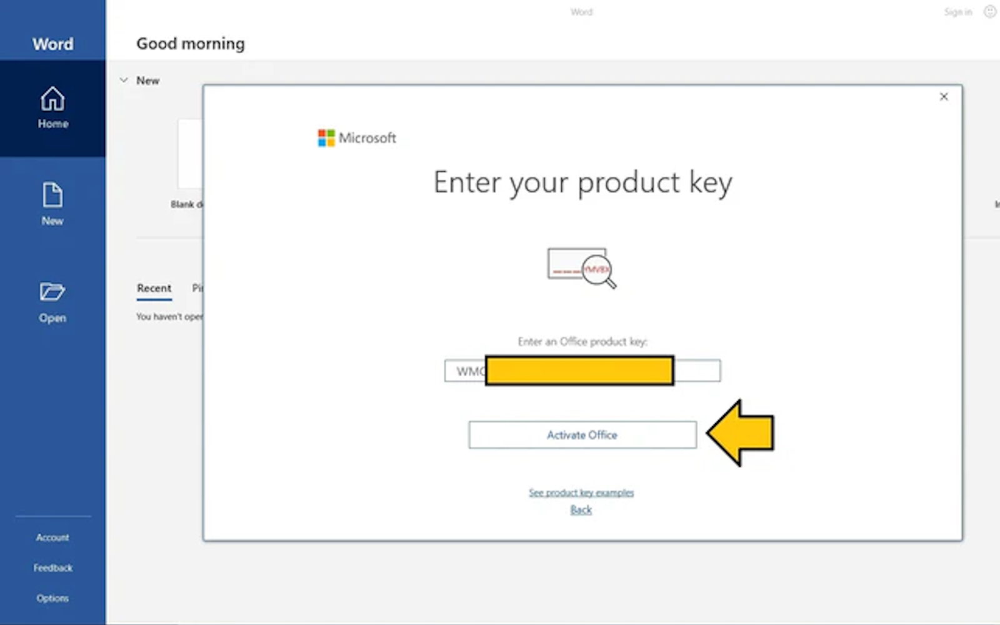
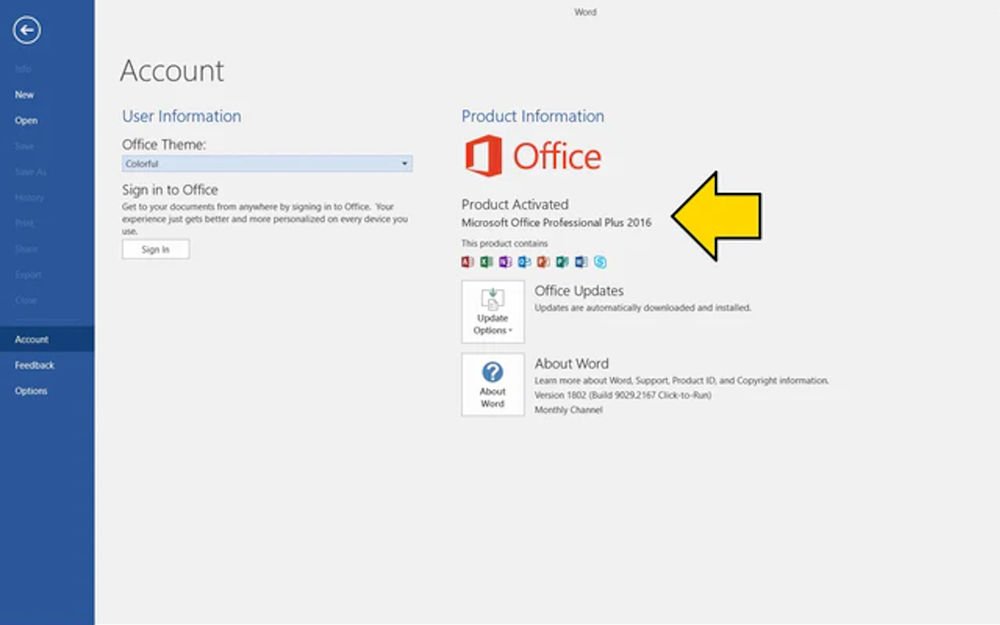

1. Descărcați fișierul de instalare Office de pe linkul de mai sus
2. Faceți dublu clic sau clic dreapta pe fișierul „ProPlus2016Retail.img”, apoi faceți clic pe Montare

3. Faceți dublu clic sau clic dreapta pe fișierul „Setup”, apoi faceți clic pe Deschidere

4. Așteptați finalizarea instalării/configurării

5. Faceți clic pe Start și deschideți orice aplicație Office (de exemplu, deschideți Word)
6. Așteptați să apară ecranul de activare
7. Introduceți cheia de produs pe care ați primit-o după achiziție, apoi faceți clic pe Activare Office

8. Gata acum aveti Office-ul activat

1. Daca va apare o fereastră asemanatoare trebuie să selectați „Activați prin telefon” și apoi vă va afișa ecranul ID de instalare cu un număr de telefon gratuit care este un sistem robot automat

2.Copiati ID-ul de instalare de pa pasul 2.

3.Accesati situl din linkul acesta:
GetCID
4.Introduceti ID-ul de instalare copiat anterior in sectiunea hasurata.

5.Apsati pe "Get confirmation ID".

6.Gata acuma instroduceti ID-ul primit in fereastra de activare telefonica, iar produsul se va activa.